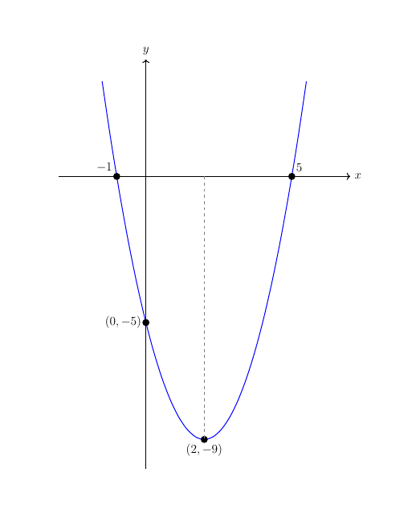

Bradley's Maths
Sketching Curved Graphs
GCSE all examination boards and IGCSE Cambridge (0580)
Exam Question
Sandra used my Q & Apage to send me an email. This is what she said:
My son and I are having an argument about graphs in GCSE Maths. He says a sketch is just a rough diagram and that is all that is needed. I say that is not true and you have to plot the points and join them up neatly but freehand. Who's right?
Well, Sandra, you are both right and you are both wrong!
A really quick rough diagram is fine if you are using it to check the correct region in a quadratic inequality, there are no marks for the diagram so you don't lose anything by using it.
Plotting points is fine if you have plenty of time, like when you are doing coursework, but it takes up too much time in an exam. 'Sketch' in mathematics means produce an accurate diagram without plotting lots of points.
The only points you need are; the roots of the equation, the turning point and the $y$-intercept. The solution is below and though I have used a computer to show the final sketch, if you watch the video you will see me sketch the graph in real time.
Sketch the graph of $y=x^2-4x-5$ showing the turning point, roots and $y$-intercept.
Before you move on to the solution or watch the video, why don't you have a go at this one yourself?
Solution
I will start with the turning point and I have already produced a blog post on completing the square to find the turning point. You can access it here.
The completed square format is $(x-2)^2-9$ and the turning point coordinates are $(2,-9)$
We factorise the quadratic to find the roots, $x^2-4x-5\equiv(x-5)(x+1)$ so the coordinates of the roots are $(-1,0)$ and $(5,0)$
As with all polynomials, the constant term is the $y$-intercept and its coordinates are $(0,-5)$
And the graph should look something like this:

A rough sketch won't get you the marks and a plotted graph will use up valuable exam time. Use a ruler and pencil to draw the axes, find the important points algebraically, put the points in more or less the right place on the axes (by eye) and draw a smooth curve through them. Don't forget to label the four important points.
Is there a topic you'd like to see featured? Request it on my Q & A page and I'll prioritize it for a future post.
Topics covered in this question
- Completing the square
- Factorising a quadratic
- Identifying the $y$-intercept
- Sketching a curved graph